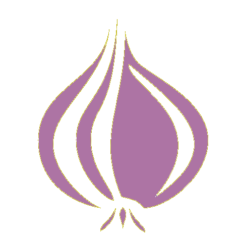
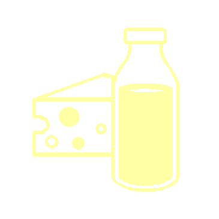
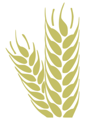
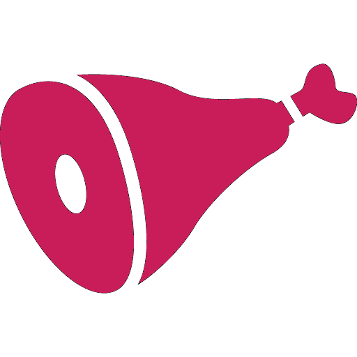

|
الفواكه
الفواكه نوعٌ من الثّمار التي تنمُو على فُروع النّباتات لتحملَ بذُورها، والفاكهه لُبٌّ من الألياف والعصير وظيفته توفيرُ الحماية لبذُور الشّجرة من العوامل الخارجيّة، وذلك لأنّ البذور هي وسيلة تكاثر النّباتات، وتُساعد الفواكه على حملِ البذور ونشرها في أنحاء البيئة الطبيعيّة للنّبات ليستطيعَ الحفاظ على نسله، فعندما تأكلُ الحيوانات الفواكه تتناولُ معها ما في داخلها من بُذور، ثُمَّ تطرحُها مع مُخلَّفاتها في بُقعة بعيدةٍ عن الشّجرة الأصليّة، فتنمُو من هذه البذور أشجارٌ جديدة بأماكن مُتباعدة، ممَّا يضمنُ بقاء النَّوْع. |
الخضار
تعتبر الخضروات من أهم الأغذية التي يستخدمها الإنسان، وهي نوع من النباتات العشبيّة التي تُستعمل إما جزئيّاً أو كليّاً في تحضير أطباق الطعام، ولها فوائد جمة، ويُضاف إلى الخضار أيضاً الفطر بالرغم من أنّه يُصنّف من الفطريات، بالإضافة إلى أوراق العنب بالرغم من أنّ ثمار العنب هي من الفاكهة. |
وهي عائلة نباتية تتميز بذورها بإمكانية فصلها إلى جزئين، و تشمل: الفول، الفاصولياء، العدس، اللوبياء، البازلاء، الترمس، الحمص، الفول السوداني، تختلف البقوليات بأنواعها فهناك الطازج، المجفف والمعلّب. يمكن للبقوليات أن تقلل من خطر الإصابة بالأمراض المزمنة، كأمراض القلب، السكري، السمنة والسرطان. |
|
التوابل
تُستخرج البِهارات من بُذور النّباتات، أو اللّحاء، أو البراعم، أو الجذور، وتُستخدم لِتنكيه الطّعام، أو لِتلوينه أو لِحفظه، وتُستخدم بعضُ أنواع البِهارات كطقوسٍ دينيّةٍ، أو لصناعة العطور، ومُستحضرات التّجميل. تمتاز بعض البِهارات باحتوائها على مُضادّاتٍ للميكروبات؛ ممّا يُفسّر سبب استخدامها بكثرةٍ في المناطق الدّافئة الّتي تَكثر فيها الأمراض، وكذلك استخدامها بكثرةٍ مع اللحوم؛ لقابليّتها للتأكسد والفساد. |
المكسرات
تتعدد فوائدها بخلاف الاعتقاد الذي يتهمها بالضرر لاحتواءها على الدهون ، و هنا تجدر الاشارة الى أن الدهون التي تحتويها المكسرات هي دهون غير مشبعة لا تسبب الكولسترول خاصة حين تناولها نيئة دون قلي تعتبر المكسرات مصدرا للألياف أيضا ، فهي تشكل حماية من أمراض القلب لأنها تحتوي على دهون غير مشبعة تساعد على خفض الكوليسترول الضار في الجسم بمعادلته بالكوليسترول المفيد |
الألبان
ويعتبر الحليب المصدر الرئيس للكربوهيدرات، ويتميز الحليب بأنّه سهل الامتصاص ولهذا السبب يعتبر المشروب الرئيس للأطفال حديثي الولادة اللذين لا يستطيعون تناول الطعام، وذلك لاحتوائه على كافة العناصر التي يحتاجها الجسم لبناء الخلايا والعظام. هناك أشكال كثيرة يتحوّل إليها الحليب وتسمّى مشتقات الحليب وهي: اللبن، واللبنة، والجبنة، والقشطة، والزبدة، والسمن وغيرها. ويختلف إنتاج كل منها عن الآخر وكذلك يختلف قوام مشتقات الحليب فيما بينها. |
|
الحبوب
تُعتبر الحبوب من أكثر المواد الغذائية الضرورية لصحة الجسم؛ لأنها تمنحه العديد من الفوائد المختلفة لاحتوائها على مجموعة عناصر غذائية مهمة وأبرزها الفيتامينات، والذي يميزها أكثر من اللحوم أو المصادر الحيوانية هو توافرها وسعرها المناسب، وبالتالي قدرة الجميع على شرائها وتناولها، ومن أبرز فوائدها أنها تحمي الجسم من الإصابة بالعديد من الأمراض؛ وأبرزها مرض السرطان الرئوي؛ لأنها غنية بفيتتامين B. |
 الأعشاب الأعشابهناك العديد من أنواع الأعشاب المختلفة بأشكالها وأحجامها وألوانها، ولكل نوع من هذه الأعشاب خواص تختلف عن الأخرى، و تمتاز كل عشبة بنكهتها ورائحتها الخاصّة، والأعشاب معروفة منذ قديم الزمان، وتعرف الأعشاب بفوائدها التي لا تحصى لجسم الإنسان، وتدخل الأعشاب في صناعة الأدوية وتدخل في وصفات الطبّ البديل وتستخدم أيضاً في صناعة مستحضرات التجميل ومستحضرات العناية بالشعر والبشرة، وتدخل في صناعة الصابون، وتساعد في علاج الأمراض، فالأعشاب مثل الدواء، لكل مرض عشبة تعمل على علاجه. |
الزيوت
والزيت هو مادة تمتاز بلوزجتها في درجات الحرارة العادية، كما أنه من المواد اللاقطبية، ويمتاز بعدم قدرته على التداخل مع الماء، ويوجد في الحياة البشرية كم هائل من الزيوت، ولكل زيت خصائصه الكيميائية المختلفة والخاصة به. تتميز الزيوت الطبيعيّة عن غيرها بأنّها لا تحتوي على المواد الكيميائية، كما أنّ لها دوراً في المحافظة على جمال الجسم وصحته، وتدخل في علاج مشاكل الجلد، وفروة الرأس، والشعر، وتحسين الأظافر، والبشرة الجافة، كما أنّها تستخدم كمزيل للمكياج. |
|
اللحوم
اللحوم هي نوع من أنواع الأغذية التي يتناولها الإنسان في وجباته اليومية، وهي عبارة عن نسيج عضلي حيواني ودهون عالقة به، كما أنّها تشمل أيضاً بعض الأعضاء الحيوانية من غير العضل مثل: الكبد، والنخاع، والجلد، والكلى، والمخ. تعتبر اللحوم غذاءً أساسيّاً في تكوين وترميم أنسجة وخلايا الجسم، كما تُساعد في تنشيط وظائف الجسم المختلفة من دماغيّة ودموية وهضمية. تنقسم اللحوم إلى قسمين هما: لحوم بيضاء؛ وتشمل لحوم بعض الأسماك والطيور مثل البط، والدجاج، والحمام، والقسم الثاني لحوم حمراء: وتشمل لحوم الأغنام، والعجل، والبقر، والإبل، والغزلان، والضأن. |
البذور
البذور من المصادر الغذائية المهمة لصحة الإنسان فهي تدخل في إنتاج منتجات غذائية مهمة ومتعددة كالخبز والدقيق، كما أنها تستخدم ف الأكل مباشرة. تستخدم أيضاً في استخراج الزيوت النباتية منها كزيت الذرة وزيت عباد الشمس. واعتاد الناس على استخدام المنكهات والتوابل المستخرجة في الأصل من البذور والمحضرة منها. |
العسل
يعدّ العسل من أهم العناصر الغذائية المهمة والمفيدة لجسم الإنسان، فقد عُرف منذ القدم بمدى فعاليتهِ في علاج العديد من الأمراض والوقاية منها، كما استخدم كغذاءٍ أساسي للجسم لاحتوائه على العديد من الفيتامينات؛ كفيتامين النّياسين و B6 ومعدن الكالسّيوم والحديد والمغنسيوم والفسفور والصّوديوم والزّنك، والعديد من الأحماض الأمينية وبعض المواد المضادة للأكسدة. |